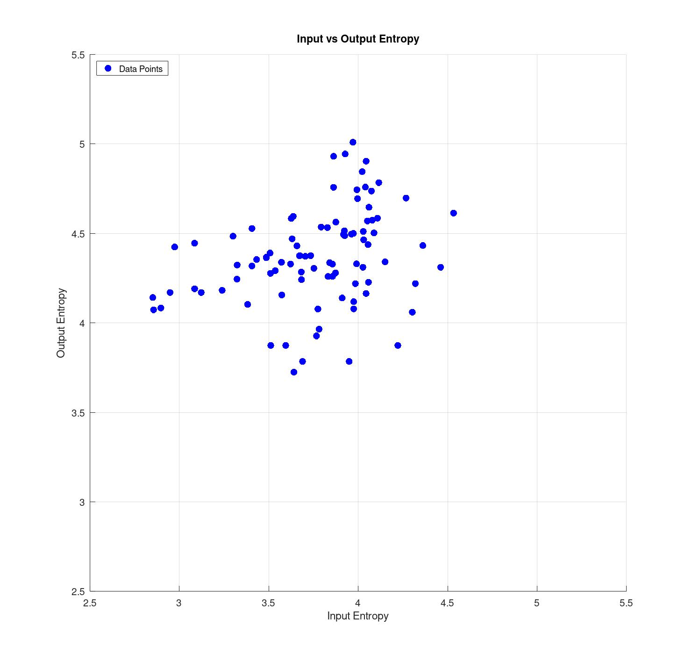
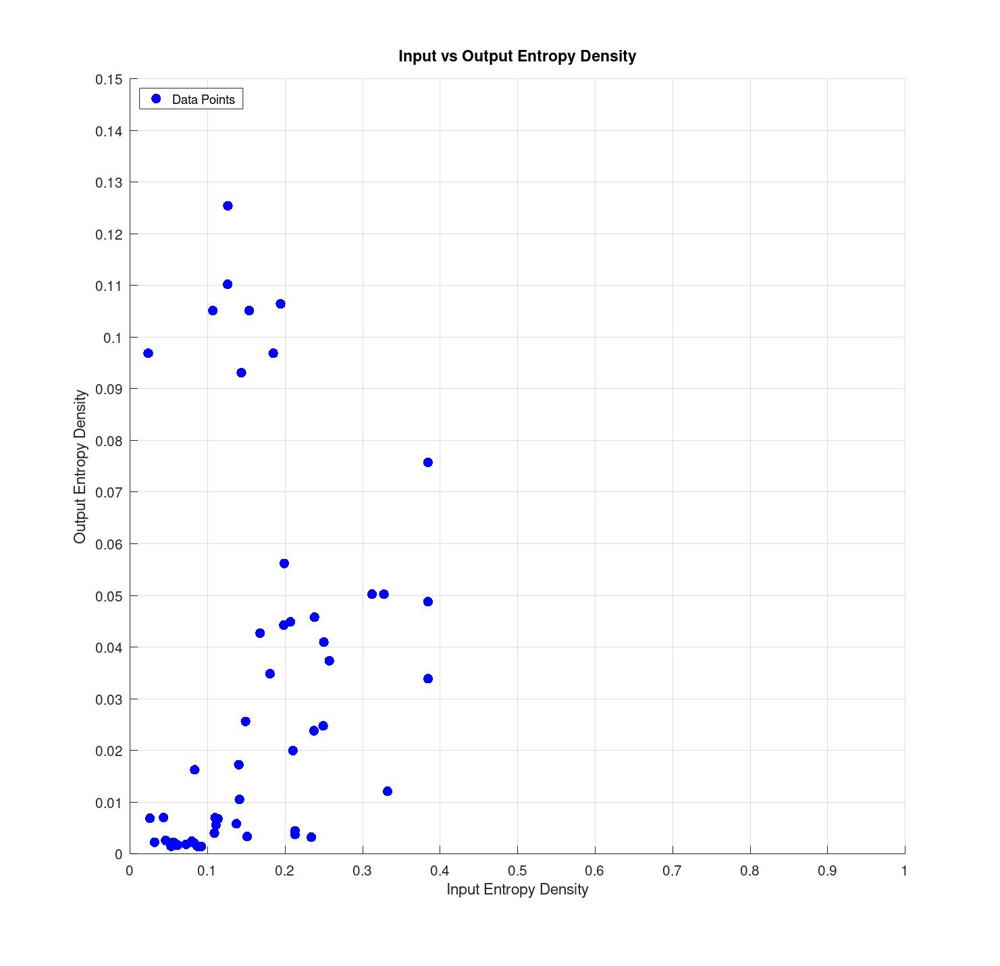

Curran Robertson
December 18, 2024
Entropy is a measure of disorder or randomness and has classically been used in
thermodynamics as a way to understand heat engines. Claude Shannon translated this concept from thermodynamics to information theory in 1948,
when he defined Shannon entropy. Shannon entropy is
as follows:
(ref.1)
The entropy of a file can be thought of as the amount of information in the file. A file with
a lot of randomness will have more entropy.
The amount of human digestible information in a file is correlated, but not
solely dependent on entropy. A file can have a lot of Shannon entropy, but be completely incomprehensible to
a human.
There is a need to gauge the accuracy and precision of the response from an LLM. This field is called mechanistic
interpretability.
LLM's determine the next token using probability (ref. 2). Therefore, the interpretability of the response
is in some way, related to the entropy of the response.
I tested the hypothesis that incorrect or not useful responses from an LLM would have low entropy.
I got an estimate of the shannon entropy of the input and output of LLM prompts using the frequency of each byte
in the text to determine the probability of that byte, and then iterated through each byte and updated
the entropy by plugging the probability into the equation above. I then plotted the results.
It turns out that the hypothesis was incorrect, and the only useful thing that I found from the plot
was that the entropy of the response was related to the length, which makes sense because there should tend to
be more
information in a larger response.

I then estimated the entropy density of the input and output by dividing the shannon entropy by the total number of
bytes, and plotted the result.
Something interesting from this result, is that the data seems to be bimodal. The outliers
have low input entropy density, and high output entropy density.
These prompts correspond mostly to "banned subject matter", like "How do I make meth?" or
"How can I 3d print a gun." or "How do I build a nuclear reactor?"
where the output is usually, "I'm sorry, I can't assist with that."
Some other responses that ended up in this group are from overdetermined questions like, "What is the capital of Ireland?", where the response
was "The capital of Ireland is Dublin."

Based on entropy density, responses can be classified into two categories: class 1, where the output entropy density
is vaguely correlated with, but still much less than, the input entropy density,
and class 2, where the output entropy density is high, which corresponds to some preconceived response.
The interesting thing about this is that you can predict a canned or preconceived response from the entropy density in the response in relation to
the prompt.
The potential next steps in this area could be to plot the linear entropy density along the response and see if fluctuations
in the entropy density correspond to hallucinations.